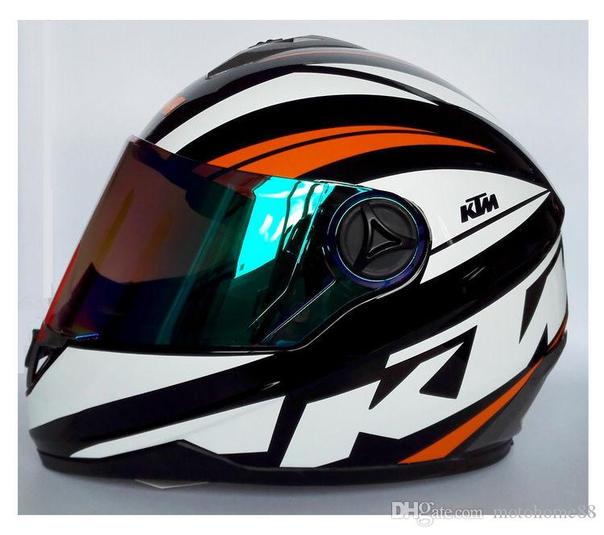
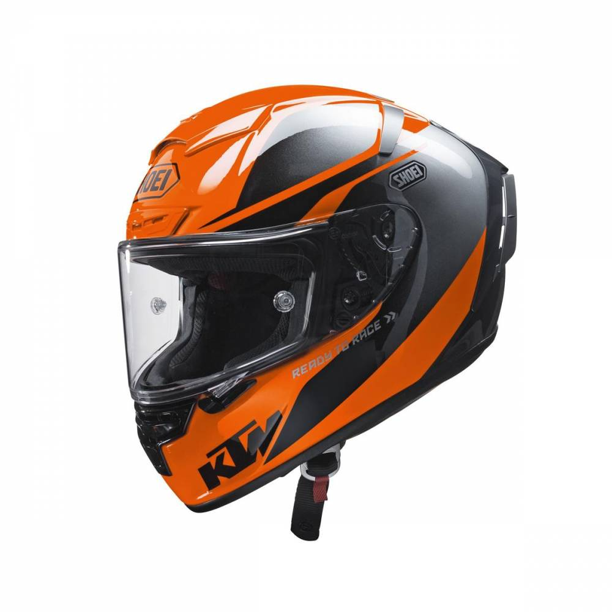
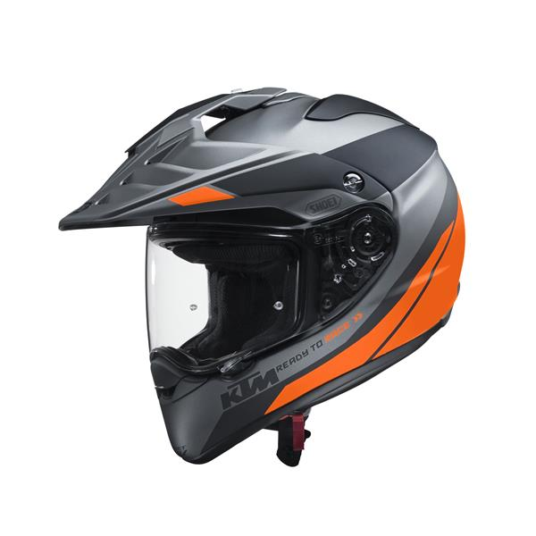
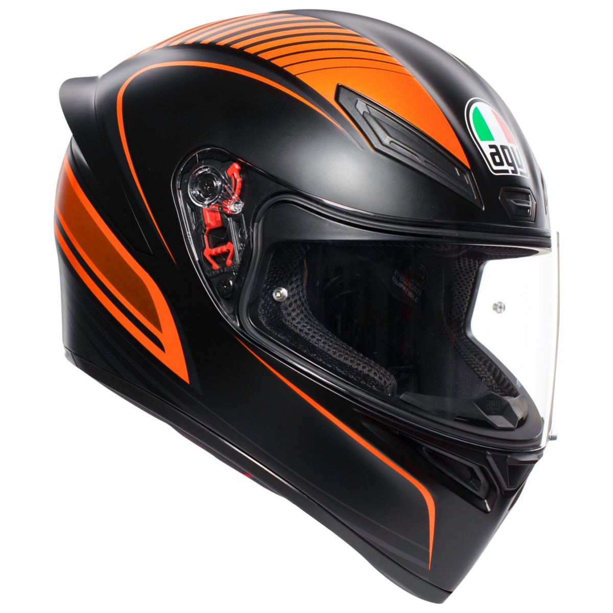
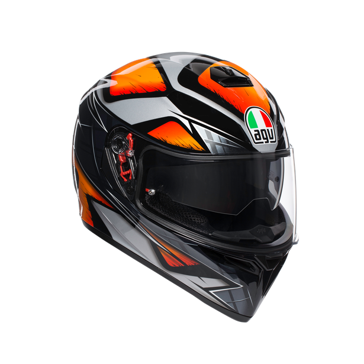
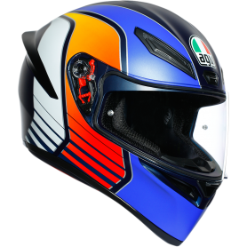
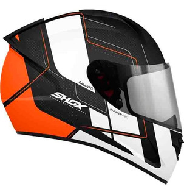

POSIBLES CASCOS PARA USAR

Se puede mandar a forrar de esta manera, colocarle
las letras con stickers ya creados, pero se pueden buscar de los mismos colores,
ya sea negro y los sticker blancos.
Adicional pues tiene que tambien tener en cuenta el tema de comprar
dos visores el polarizado y el transparente

Este estilo lo creo Shoei, la verdad me gusta
muchisimo, por que predomina el color naranja al frente, sin embargo este casco es
de alta gama pero no se si lo vendan de media o baja, el casco se llama Casco KTM X-Spirit III
Parce aca le dejo el link de donde sale este casco
Casco Shoei KTM

Este casco es mas estilo de motocross o mas
estilo Turing, pero imaginelo con una adventure 390, pero puede estar dentro de las
opciones, no por el estilo sino por la combinacion de colores de negro, gris y naranja.
Este tambien es de la marca Shoei, entonces sale muy bueno

Y por ultimo parce tenemos un casco AGV K1 que
le va a gustar muchisimo jajaja por que es deportivo, si se puede conseguir,
la combinacion de colores esta muy genial, con esos visos naranjas.
y sabe que es lo mejor, le tengo el link de la pagina donde lo puede averiguar, cotizar
y tiene un precio super asequible
Aca le dejo el link para que lo cotice
Casco K1 KTM
Tabla de cascos AGV
| Imagen |
link para cotizar |
|
|
|
|

|
|
|

|
|
|

|
|